Objetos › Material

Carbón
Material
Cómo se consigue
- Al romper: Carbón · requiere herramienta de grado 1
- Veta: altura 5 – 80. Ver Minerales.
- Botín de
 El Capataz Kobold Griknash (100 %)
El Capataz Kobold Griknash (100 %) - Botín de
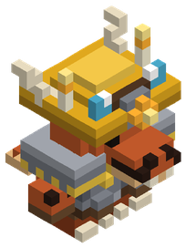
Capataz kobold (90 %) - Botín de
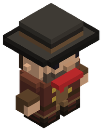
Cabecilla bandido (70 %) - Botín de
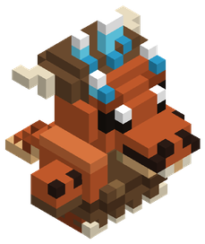
Geomante kobold (60 %) - Botín de
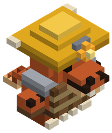
Kobold entibador (60 %) - Botín de
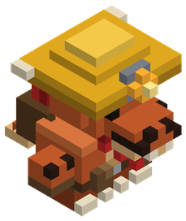
Kobold dinamitero (60 %) - Botín de
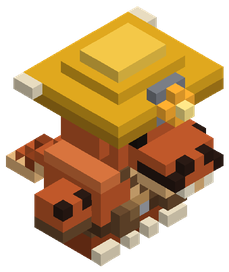
Kobold minero (60 %) - Botín de
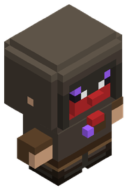
Brujo bandido (40 %) - Botín de
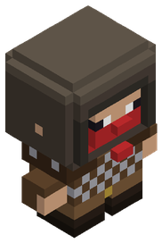
Bandido acorazado (40 %) - Botín de
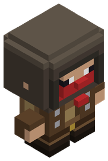
Bandido arquero (40 %) - Botín de
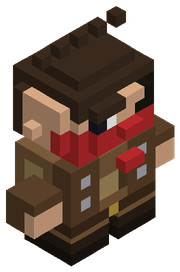
Bandido matón (40 %) - Botín de
 Duende acuchillador (10 %)
Duende acuchillador (10 %) - Botín de
 Capitán Esquelético Torvald (5 %)
Capitán Esquelético Torvald (5 %) - Botín de
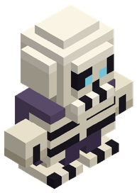
Esqueleto de la horda (5 %) - Cofres de mazmorra hasta nivel 12 (60 %)
Para qué sirve
- Ingrediente de:
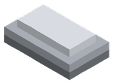
Lingote de hierro,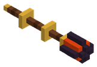
Bastón de fuego,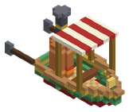
Lancha de Vapor con Paletas,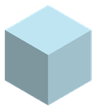
Cristal,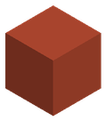
Tejas,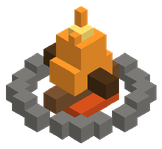
Hoguera,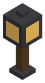
Farol,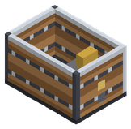
Vagoneta con Taladro Frontal, Fragua,
Fragua, 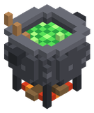
Caldero de alquimia,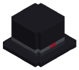
Chistera de Novio,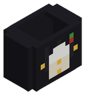
Frac de Novio,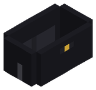
Pantalón de Novio,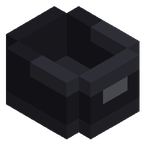
Zapatos de Charol,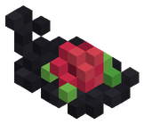
Tocado de Rosa Carmesí,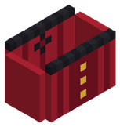
Corsé de Gala Carmesí,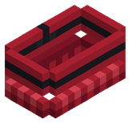
Falda de Gala Carmesí,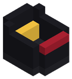
Tacones Carmesí,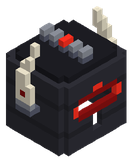
Yelmo Cornudo del Caballero Negro,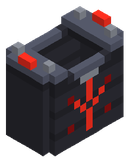
Coraza del Caballero Negro,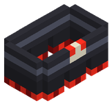
Escarcelas del Caballero Negro,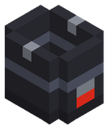
Escarpes del Caballero Negro,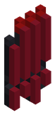
Capa Rasgada del Caballero Negro,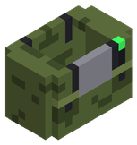
Chaleco Táctico,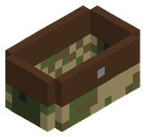
Pantalón Cargo,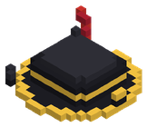
Tricornio Pirata,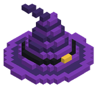
Sombrero de Bruja,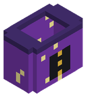
Túnica de Bruja,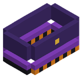
Falda de Bruja,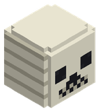
Máscara de Calavera,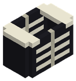
Camisa de Esqueleto,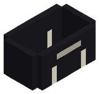
Pantalón de Esqueleto,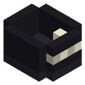
Botas de Esqueleto,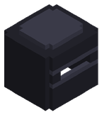
Capucha Ninja,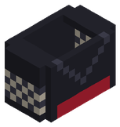
Gi Ninja,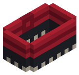
Pantalón Ninja,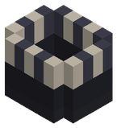
Tabi Ninja,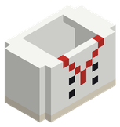
Chaquetilla de Cocinero,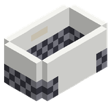
Pantalón de Cocinero,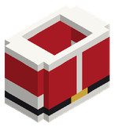
Abrigo de Papá Noel, Cabeza de Muñeco de Nieve, Cuerpo de Muñeco de Nieve, Bola de Muñeco de Nieve, Pezuñas de Reno, Peluca de Vampiro, Frac de Vampiro, Pantalón de Vampiro, Zapatos de Vampiro, Capa de Vampiro, Máscara de Zombi, Botas de Goma, Gorro Playero, Capucha de Pícaro, Chaleco de Pícaro, Pantalón de Pícaro, Capa Corta de Pícaro, Lingote de cobre, Lingote de estaño, Lingote de plata, Lingote de plomo
Identificador: coal · archivo mods/items/blocks.json